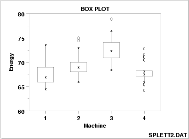

|
1.
Exploratory Data Analysis
1.3. EDA Techniques 1.3.3. Graphical Techniques: Alphabetic
|
|||
|
Purpose: Check location and variation shifts |
Box plots (Chambers 1983) are an excellent tool for conveying location and variation information in data sets, particularly for detecting and illustrating location and variation changes between different groups of data. | ||
|
Sample Plot: This box plot reveals that machine has a significant effect on energy with respect to location and possibly variation |

This box plot, comparing four machines for energy output, shows that machine has a significant effect on energy with respect to both location and variation. Machine 3 has the highest energy response (about 72.5); machine 4 has the least variable energy response with about 50% of its readings being within 1 energy unit. |
||
| Definition |
Box plots are formed by
Horizontal axis: The factor of interest
|
||
| Single or multiple box plots can be drawn | A single box plot can be drawn for one batch of data with no distinct groups. Alternatively, multiple box plots can be drawn together to compare multiple data sets or to compare groups in a single data set. For a single box plot, the width of the box is arbitrary. For multiple box plots, the width of the box plot can be set proportional to the number of points in the given group or sample (some software implementations of the box plot simply set all the boxes to the same width). | ||
| Box plots with fences |
There is a useful variation of the box plot that more specifically
identifies outliers. To create this variation:
|
||
| Questions |
The box plot can provide answers to the following questions:
|
||
|
Importance: Check the significance of a factor |
The box plot is an important EDA tool for
determining if a factor has a significant effect
on the response with respect to either location or variation.
The box plot is also an effective tool for summarizing large quantities of information. |
||
| Related Techniques |
Mean Plot Analysis of Variance |
||
| Case Study | The box plot is demonstrated in the ceramic strength data case study. | ||
| Software | Box plots are available in most general purpose statistical software programs. | ||